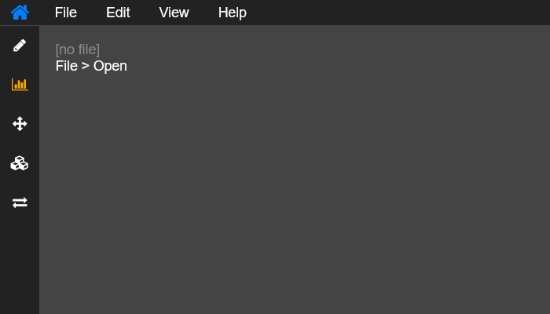
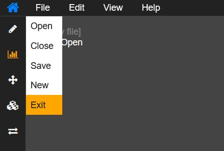

Käyttöliittymä online-editorille
- Web-kehitys ei ole pelkästään tyypillisten verkkosivujen ja -kauppojen suunnittelua.
- Netissä on paljon online-työkaluja, joilla voi vaikka muokata kuvia tai suunnitella ulkoasuja
- mm. Canva, Figma ja
diagrams.net
- Tässä harjoituksessa suunnitellaan käyttöliittymä yksinkertaiselle editorille.
- Ohjelman toimintoja ei tarvitse toteuttaa vaan tarkoitus on asetella valikot ja kuvakkeet paikalleen.

html_css_basics
|
├── demos
│ ├── ...
│ └── d12
│ ├── index.html
│ └── style.css
|
Tehtävä
Kuvakkeet on haettu Fontawesome kirjastosta
Lisää se headiin
<link rel="stylesheet" href="https://cdnjs.cloudflare.com/ajax/libs/font-awesome/4.7.0/css/font-awesome.min.css">
Myös jQueryä saattaa tarvita (myös headiin)
<script src="https://ajax.googleapis.com/ajax/libs/jquery/3.6.0/jquery.min.js"></script>
Kun Fontawesome on linkitetty headiin, voit selata ja käyttää sen kuvakkeita i-tagilla seuraavaan tapaan:
<i class="fa fa-home" aria-hidden="true"></i>

Vasemman laidan valikolla (nav) on id 'tools' ja ylävalikolla (nav) id 'topnav' jotta niihin voidaan kohdistaa eri CSS-säännöt
Työkaluvalikko (Vasemman laidan)
- Työkaluvalikko on toteutettu ul-listalla jossa on li-elementtejä
- li-elementin sisällä on radio-inputteja, joiden label-tagissa on Fontawesomesta haettu kuvake
- Radio-pallukat on piilotettu mutta kuvakkeen väri vaihtuu kun radio-button on valittu
/* toolbar pseudos */
[id^="tool"]:checked ~ label i{
color: var(--focus)
}
[id^="tool"]{
display: none;
}
- Poista ul -listan bulletit ja rajoita #tools leveys 50px
- Tee #tools valikon elementeistä blokkeja (display: block;)
- Voit muuttaa kuvakkeen kokoa CSS:llä #tools ul li label i { …
Ylävalikko
A
- Pudotusvalikot voi laittaa näkymään CSS:llä :hover -tilassa, kuten mallissa.
- Silloin pudotusvalikko on näkyvissä vain kun hiiri on päätason valikon napin päällä tai pudotusvalikon nappien päällä.
B
- Toinen vaihtoehto on tehdä ylävalikko esim. radio-buttoneilla ja käyttää CSS:n :checked -tilaa.
- Siten pudotusvalikko pysyy näkyvissä kun käyttäjä on kerran klikannut ylävalikon nappia.
Katso Lisämateriaalit-kohdasta Hover / Toggle menut
Jos aikaa jää
- Tallenna koodi editor.js tiedostoon ja linkitä se headiin
- Polkaise koodi käytiin script-tagissa ennen bodyn sulkeutumista
<script>setup()</script>
- Kokeile avata puolipiste-eroteltu .csv tiedosto editorissa.
- Löydät datasettejä esim. Tilastokeskuksen sivulta
editor.js
/* editor.js */
const radios = document.querySelectorAll("#topnav input[type='radio']");
function close_menus(){
for (let checkbox of radios) {
checkbox.checked = false;
}
let $radios = $('#topnav input[type="radio"]');
$radios.prop('checked', false).data('checked', false);
}
function setup(){
const main = document.getElementById("main");
const toolbox = document.getElementById("tools")
const topnav_sub_items = document.querySelectorAll("#topnav ul li ul li *")
main.addEventListener('click', () => {close_menus()});
toolbox.addEventListener('click', () => {close_menus()});
topnav_sub_items.forEach((element) => {
element.addEventListener('click', () => {close_menus()});
})
let $radios = $('#topnav input[type="radio"]');
$radios.click(function () {
let $this = $(this);
if ($this.data('checked')) {
this.checked = false;
}
let $otherRadios = $radios.not($this).filter('[name="'+ $this.attr('name') + '"]');
$otherRadios.prop('checked', false).data('checked', false);
$this.data('checked', this.checked);
});
let fileupload = document.getElementById('open_file')
fileupload.onchange = function(e) {
open_file()
};
}
function open_file(){
let file = document.querySelector('#open_file').files[0];
let reader = new FileReader();
reader.readAsText(file, 'ISO-8859-1');
reader.onload = function(event) {
let csv = event.target.result;
let rows = csv.split('\n');
let html = '<table>';
for (let i = 0; i < rows.length; i++) {
cols = rows[i].split(';');
html+=`<tr>`;
for (let j = 0; j < cols.length; j++) {
let value = cols[j];
html+= `<td>${value}</td>`;
}
html += `</tr>`;
}
html += `</table>`;
document.getElementById("main").innerHTML = html;
}
}
function close_file(){
document.getElementById("main").innerHTML = '<span>[no csv file]</span><br>File > Open';
}